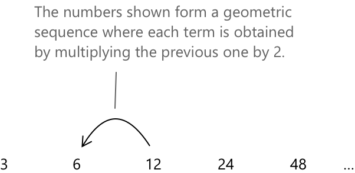
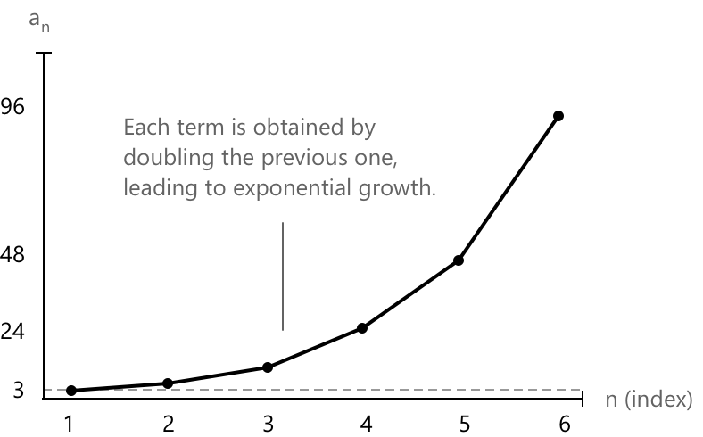
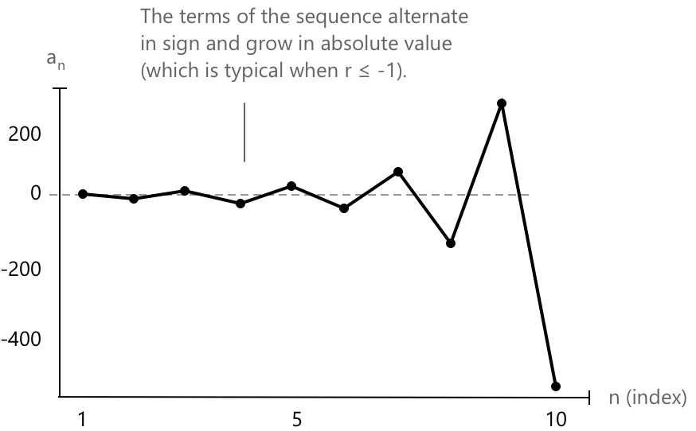

Геометрична прогресія
Що таке геометрична прогресія
Послідовність \( a_n \) називається геометричною прогресією (або геометричною послідовністю), якщо вона складається з чисел, розташованих таким чином, що відношення будь-якого члена до попереднього є сталим. Вона характеризується членами вигляду:
\[ a_1, a_2, \ldots, a_n \quad \text{with} \quad \frac{a_n}{a_{n-1}} = r \]
- За домовленістю, перший член геометричної прогресії зазвичай індексується з \( n = 1 \).
- \( r \) позначає відношення між двома послідовними членами геометричної прогресії і називається знаменником прогресії.
- Якщо \( r > 1 \), прогресія є зростаючою (експоненціально).
- Якщо \( 0 < r < 1 \), прогресія є спадною до нуля.
- Якщо \( r = 1 \), прогресія є сталою.
- Якщо \( r < 0 \), прогресія знакозмінна.
Розглянемо, наприклад, послідовність із загальним членом:
\[a_n = 3 \cdot 2^{n-1}\]
Ця послідовність є геометричною прогресією, що починається з 3, де кожен член отримується множенням попереднього на \( r = 2 \).

Геометрична прогресія також може бути визначена рекурсивно, тобто кожен член визначається через попередній. Рекурсивне означення має вигляд:
\[ \begin{cases} a_1 = a \\[0.5em] a_n = a_{n-1} \cdot r \quad \text{for } n \geq 2 \end{cases} \]
- \( a \in \mathbb{R} \) — перший член,
- \( r \in \mathbb{R} \) — знаменник прогресії,
- \( a_n \) — загальний член послідовності.

Геометрична прогресія демонструє характерну закономірність експоненціального зростання, де відношення між послідовними членами залишається сталим, що призводить до швидкого збільшення (або зменшення) величини.
Арифметична прогресія, натомість, демонструє характерну закономірність лінійного зростання, де різниця між послідовними членами залишається сталою, що призводить до рівномірного збільшення (або зменшення) з часом.
У геометричній прогресії кожен член \( a_n \) отримується множенням першого члена \( a_1 \) на знаменник \( r \), піднесений до степеня \( (n - 1) \). Це дає загальну формулу для \( n \)-го члена:
\[ a_n = a_1 \cdot r^{n – 1} \quad \text{for } n \geq 1 \]
Ця формула дозволяє обчислити будь-який член послідовності безпосередньо, без знання чи перелічення всіх попередніх.
Ключова різниця між явною формою та рекурсивною формою послідовності полягає в тому, як визначається кожен член:
-
У явній формі кожен член \( a_n \) безпосередньо визначається як функція від \( n \).
Можна обчислити будь-який член незалежно, без потреби знати попередні. -
У рекурсивній формі кожен член \( a_n \) визначається через один або кілька попередніх членів послідовності. Щоб обчислити певний член, спочатку потрібно знати попередні.
Приклад
Визначимо геометричну послідовність з першим членом \( a_1 = 2 \) та знаменником ( r = 3 ). Використаємо формулу:
\[ a_n = a_1 \cdot r^{n – 1} \]
Підставимо значення:
\[ a_n = 2 \cdot 3^{n - 1} \]
Тепер обчислимо перші кілька членів:
- \( a_1 = 2 \)
- \( a_2 = 2 \cdot 3^1 = 6 \)
- \( a_3 = 2 \cdot 3^2 = 18 \)
- \( a_4 = 2 \cdot 3^3 = 54 \)
- \( a_5 = 2 \cdot 3^4 = 162 \)
Результуюча послідовність: \[ 2,\ 6,\ 18,\ 54,\ 162,\ \dots \]
Сума \( n \) членів геометричної прогресії
Сума \( S_n \) перших \( n \) членів \( a_1, a_2, \dots, a_n \) геометричної прогресії задається формулою:
\[ S_n = a_1 \cdot \frac{1 – r^n}{1 – r} \quad \text{for } r \neq 1 \]
Ця формула дозволяє швидко обчислити загальну суму скінченного числа членів геометричної прогресії. Наприклад, розглянемо геометричну прогресію:
\[ 2,\ 4,\ 8,\ 16,\ 32 \]
Ми хочемо обчислити суму перших 5 членів (\( n = 5 \)). Використовуючи формулу, маємо:
\[ S_5 = 2 \cdot \frac{1 - 2^5}{1 - 2} = 2 \cdot \frac{1 - 32}{-1} = 2 \cdot 31 = 62 \]
Граничне поводження геометричної послідовності
Щодо границь геометричної послідовності, спостерігаємо наступне поводження:
- Вона розбігається до \( +\infty \), якщо \( r > 1 \).
- Вона є сталою (тобто \( a_n = a_0 \) для кожного \( n \in \mathbb{N} \)), якщо \( q = 1 \), і тому \(\lim_{n \to +\infty} a_n = a_0 = 1.\)
- Вона є нескінченно малою, якщо \( |r| < 1 \), тобто члени наближаються до нуля.
- Вона є осцилюючою (нерегулярною), якщо \( r \leq -1 \), через знакозмінність та необмежене зростання.
Раніше показана прогресія:
\[ a_n = 2 \cdot 3^{n – 1} \]
розбігається, оскільки знаменник між її членами дорівнює \( r = 3 \), що задовольняє умову \( r > 1 \). У результаті члени зростають експоненціально і прямують до \( +\infty \) при зростанні \( n )\.
Розглянемо, наприклад, геометричну прогресію, показану на рисунку:
\[ a_n = (-2)^{n - 1} \]
Розкладаючи послідовність, спостерігаємо, що знаменник дорівнює \( r = -2 \), що задовольняє умову \( r \leq -1 \). У результаті послідовність демонструє нерегулярне осцилюючу поведінку, змінюючи знак кожного члена, тоді як абсолютні значення зростають експоненціально.
